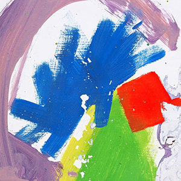

 This Is All Yours — это второй студийный альбом, он был выпущен 22 сентября 2014 года, включает себя синглы «Hunger of the Pine», «Left Hand Free», и «Every Other Freckle», альбом занял первую строчку UK albums Chart, номинирован на Best Alternative Music Album at the 57th Annual Grammy Awards.
Басист Гвил Сайнсбери покинул группу в январе 2014-го, группа начала запись альбома в апреле 2014. Он был записан в томе же месте, что и An Awesome Wave на Iguana Studios, которую Гас Ангер-Гамильтон охарактеризовал как «Маленькое и укромное место, своего рода магазин подержанных шин».
Название |
Длительность |
|---|---|
«Intro» |
4:38 |
«Arrival in Nara» |
4:13 |
«Nara» |
4:56 |
«Every Other Freckle» |
3:36 |
«Left Hand Free» |
2:53 |
«❦ [Garden of England]» |
1:07 |
«Choice Kingdom» |
4:17 |
«Hunger of the Pine» |
4:59 |
«Warm Foothills» |
3:45 |
«The Gospel of John Hurt» |
5:15 |
«Pusher» |
3:26 |
«Bloodflood Pt. II» |
5:19 |
«Leaving Nara» |
16:02 |